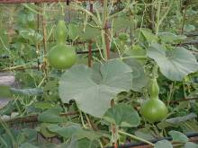

|
Après la récolte, les fruits sont suspendus pour séchage (3 à 6 mois).
Les fruits secs sont brossés avant de servir de matière à la création d'objets utilitaires, décoratifs.
Ils peuvent être pyrogravés, travaillés comme le bois, cirés, peints, ...
|
Les espèces utilisées sont nombreuses : pèlerine, massue d'Hercule, amphore, plate de Corse, warty, serpent, marenka, mayo ...
|

|
Le métier de cougourdonnier est lié à ces courges et plus particulièrement à la pèlerine qui servait de gourde aux pèlerins (notamment ceux de Saint Jacques de Compostelle).
|